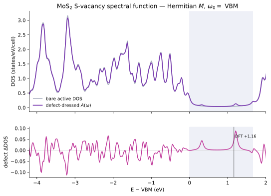
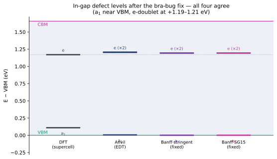
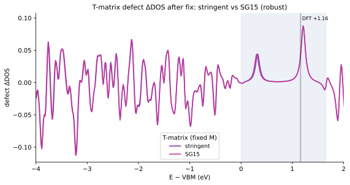
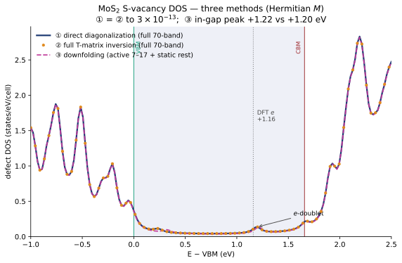
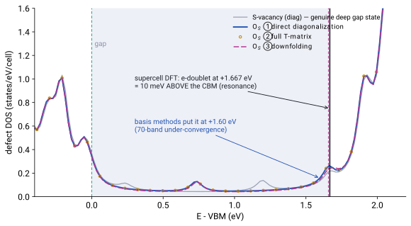
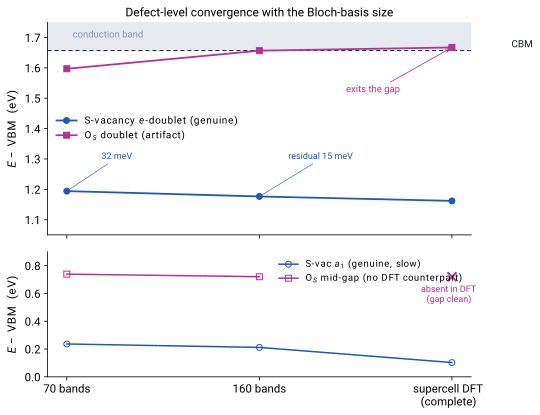

1. Spectral function ($\omega_0=$ VBM)
The defect-dressed spectral function $A(\omega)=-\tfrac1\pi\,\mathrm{Im\,Tr}\,[G^A+G^A T_{PP}\,G^A]$, with the active-space $T$-matrix $T_{PP}(\omega)=[1-\tilde V\,G^A(\omega)]^{-1}\tilde V$ and the downfolded potential $\tilde V=V_{PP}+V_{PQ}\,\mathcal G^Q\,V_{QP}$. Per-cell Bloch states carry the BZ measure $1/N_k$ on every internal $k$-sum, so $G^A=\tfrac1{N_k}\,\mathrm{diag}[1/(\omega-\varepsilon_a)]$ and $\mathcal G^Q=[\,N_k(\omega_0-H_0^Q)-V_{QQ}\,]^{-1}$.

| Quantity | Value | Meaning |
|---|---|---|
| $\int A_{\rm bare}\,d\omega$ | $10.92$ | $\approx 11$ = active bands per cell — the spectral sum rule |
| rest inverse cond$[N_k(\omega_0-H_0^Q)-V_{QQ}]$ | $17.6$ | well-conditioned |
| $\lVert\tilde V\rVert_F/\lVert V_{PP}\rVert_F$ | $0.68$ | rest dressing of the active-space potential |
| $\int\Delta\mathrm{DOS}\,d\omega$ | $-0.035$ | tiny net redistribution — physical for one defect per cell |
| in-gap defect state | $e$-doublet at $+1.21$ eV; $a_1$ near VBM | $T$-matrix $\Delta$DOS peak $+1.21$; eigenvalues give the $e$-doublet at $+1.194$ (§2), vs DFT $+1.16$ / Anvil $+1.19$ |
2. In-gap defect levels & validation
The defect levels are the in-gap eigenvalues of $H_{\rm eff}=\mathrm{diag}(\varepsilon_{nk})+M/N_k$, built from the Hermitian matrix elements ($M_{ij}=M_{ji}^*$; verified $\max|M-M^\dagger|=0$ over all $10^8$ elements). The S-vacancy shows the textbook $C_{3v}$ level structure — an $a_1$ state near the VBM and a doubly-degenerate $e$ level at $+1.19$–$1.21$ eV — and all four independent determinations agree:

| Route | $a_1$ (near VBM) | $e$ level (doublet) | $T$-matrix in-gap |
|---|---|---|---|
| supercell DFT | $+0.11$ | $+1.17$ | — |
| Anvil, EDT (independent code) | $+0.005$ | $+1.205,\,+1.205$ | $+1.19$ |
| Banff, diagonalization · pseudo-dojo | $+0.001$ | $+1.194,\,+1.194$ | $+1.209$ |
| Banff, diagonalization · SG15 | $+0.001$ | $+1.194,\,+1.194$ | $+1.219$ |
Besides the in-gap levels, the spectral sum rule ($\int A_{\rm bare}=10.92\approx11$) and the strongest defect-induced feature in the valence band ($-3.2$ eV) also match the supercell reference.
SG15 vs. pseudo-dojo robustness check
Rerunning the whole pipeline (NSCF → supercell SCF → EDI-direct → diagonalization / $T$-matrix) with SG15 ONCV pseudopotentials — identical valence (Mo 14e, S 6e), VBM/gap equal to meV — gives identical results: $\int A_{\rm bare}=10.92$, the $e$-doublet at $+1.194$ (diagonalization) / $+1.22$ ($T$-matrix), $a_1$ at $+0.001$, and the deep-valence feature at $-3.2$ eV. The defect level is robust to the pseudopotential and to the method (direct diagonalization vs. downfolded $T$-matrix).

3. The DOS three ways — a method cross-check
The in-gap defect DOS can be reached three ways from the same Hermitian $M$: (①) direct diagonalization of $H_{\rm eff}=\mathrm{diag}(\varepsilon)+M/N_k$ over the full 70-band basis; (②) full-space $T$-matrix inversion $G=G_0+G_0 T G_0$, $T=[1-V G_0]^{-1}V$, solved at each $\omega$; and (③) the active/rest downfolding of §1–2. Routes ① and ② are the same full-space Green's function — they agree to $\max|\Delta\mathrm{DOS}|=3\times10^{-13}$ — and the downfolding approximation (③) lands within $0.02$ eV.

| Method | Space | in-gap peak ($E-$VBM) |
|---|---|---|
| ① direct diagonalization | full 70-band | $+1.201$ eV |
| ② full $T$-matrix inversion | full 70-band | $+1.201$ eV |
| ③ downfolding | active 7–17 + static rest | $+1.223$ eV |
①=② is the numerical statement that diagonalization and $T$-matrix inversion are two solvers for one Green's function; ③ shows the active-space downfolding reproduces it to $0.02$ eV, validating the approximation used for the production spectral function in §1.
4. O$_S$ substitutional — a resonance, not a gap state
The same pipeline applied to the oxygen substitutional O$_S$ (isoelectronic S → O in the same unrelaxed $6\times6$ supercell; $\Delta V$ with the complete O nonlocal channel via a ghost-species primitive — O declared with zero atoms so its projectors/$D_{ij}$ tables are loaded; Hermiticity of the $10^8$-element $M$ is exact, $\max|M-M^\dagger|=0$). All three basis-set methods agree exactly on an apparent in-gap peak: ①=② at $+1.597$ eV and ③ at $+1.597$ eV ($E-$VBM, peak DOS $0.158/0.144$).

| Route | Basis | O$_S$ $e$-doublet ($E-$VBM) | verdict |
|---|---|---|---|
| ① direct diagonalization | 70-band, $12\times12$ | $+1.597$ eV | in-gap (apparent) |
| ② full $T$-matrix | 70-band, $12\times12$ | $+1.597$ eV | |
| ③ downfolding | active 7–17 + static rest | $+1.597$ eV | |
| supercell DFT (ground truth) | plane-wave complete (562 bands, $\Gamma$) | $\mathbf{+1.667}$ eV | resonance, 10 meV above CBM |
Diagnosis. The three basis-set methods agree with each other because they share the same truncated basis: the 70-band $12\times12$ primitive expansion pulls this near-edge state $\sim70$ meV down into the gap. The supercell-DFT eigenvalues (deep-band aligned to $+46$ meV) show the level actually sits just outside the gap — O$_S$ contributes only a CBM-edge resonance plus a shallow VBM-edge perturbation ($+0.031$ eV), consistent with O$_S$ being a benign, isoelectronic defect. This independently reproduces the Sternheimer-site diagnosis (its Fig. 30: “O$_S$ in-gap state = basis under-convergence”) with a completely different implementation. Contrast the S-vacancy: its $e$-doublet at $+1.19$–$1.21$ eV is a genuine deep gap state, confirmed by all four routes (supercell DFT $+1.17$).
Basis-convergence test: 70 → 160 bands
The artifact diagnosis makes a falsifiable prediction: enlarging the Bloch basis should move the O$_S$ doublet toward and out of the gap, while the genuine S-vacancy state stays put. We recomputed $M$ for both defects with bands 1–160 (ghost-O NSCF with 170 bands; $2.6\times10^8$ elements each, $144\times144$ $k$-grid, Hermiticity exact) and diagonalized the $23040$-dimensional $H_{\rm eff}$ directly. Eigenvalues, not broadened DOS peaks:

| Level | 70 bands | 160 bands | supercell DFT | verdict |
|---|---|---|---|---|
| S-vac $e$-doublet | $+1.1941$ | $+1.1765$ | $+1.1619$ | genuine — monotonic descent, residual $32\to15$ meV |
| O$_S$ doublet | $+1.597$† | $+1.6566$ ($0.4$ meV from CBM) | $+1.6672$ (above CBM) | artifact sealed — heads to the CBM and leaves the gap |
| S-vac $a_1$ | $+0.2363$ | $+0.2118$ | $+0.1026$ | genuine, slowly converging from above |
| O$_S$ mid-gap feature | $+0.739$† | $+0.7204$ | — (gap clean) | not a gap state — DFT is the arbiter |
† 70-band O$_S$ values are DOS-peak positions ($\eta=0.05$ eV); all other entries are $H_{\rm eff}$ eigenvalues. All energies $E-$VBM in eV; gap $=1.657$ eV. 160-band runs: 4 nodes $\times$ 144 ranks, $\sim$57 min each; the $23040^2$ diagonalization reads the compact binary $M$-stream (8.5 GB vs 85 GB ASCII) in seconds.
5. Method & inputs
DFT. MoS₂ monolayer, pseudo-dojo v0.5 stringent NC pseudopotentials (cross-checked with SG15 ONCV), $E_{\rm cut}^{\rm wfc}{=}100$ Ry, assume_isolated='2D'. SCF on $12\times12$; NSCF with 80 bands on the explicit full $12\times12$ ($N_k=144$, nosym). The S-vacancy $\Delta V$ comes from an unrelaxed (ideal) $6\times6$ supercell (defect 107 atoms, pristine 108 — a single S removed, all other atoms at ideal lattice sites), as cube files.
Matrix elements. EDI direct mode (edmat_direct_from_file, band_ed='1-70') gives the Hermitian $M_{nk,mk'}=\langle\psi_{nk}|\Delta V|\psi_{mk'}\rangle$ (in Ry) over the full $144\times144$ $k$-grid — $1.0\times10^8$ elements. FFT grids exactly $6\times$ commensurate ($40\times40\times300$ primitive, $240\times240\times300$ supercell).
Downfolding & resummation (per-cell states, $1/N_k$ BZ measure throughout):
Active $A$ = bands 7–17, rest $R$ = 1–6 + 18–70, $\omega_0={}$VBM, $\eta=0.05$ eV. Matrix elements converted Ry$\to$eV.
Caveats. (i) Raw $T$-matrix, not yet scaled by the defect concentration $n_d{=}1/36$. (ii) Static rest limit ($\mathcal G^Q$ frozen at $\omega_0$). (iii) Semicore bands 1–6 kept in the rest space $R$; the Sternheimer companion site drops them.